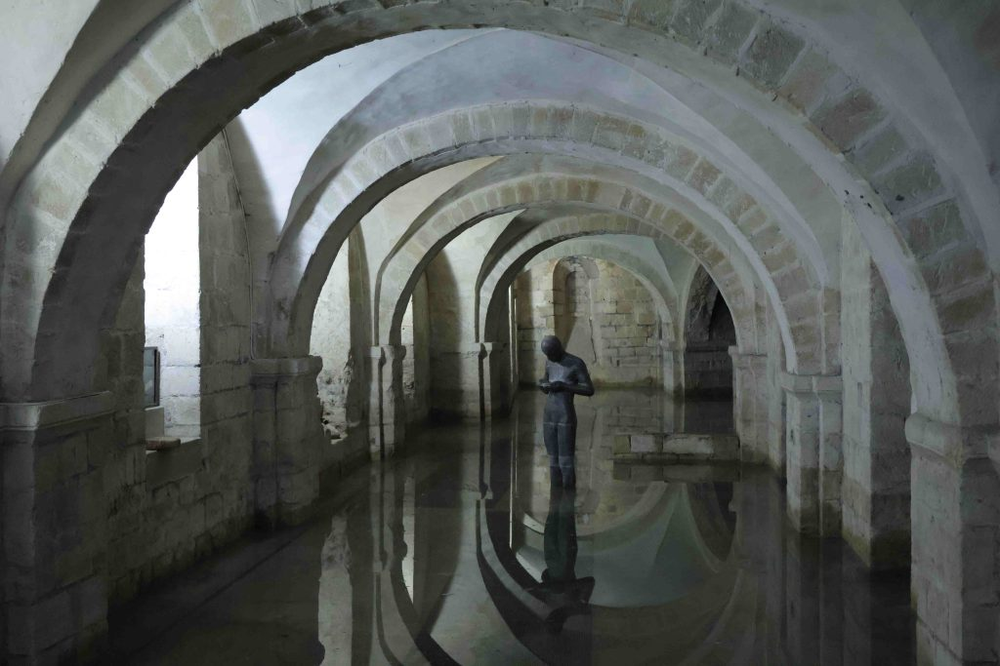
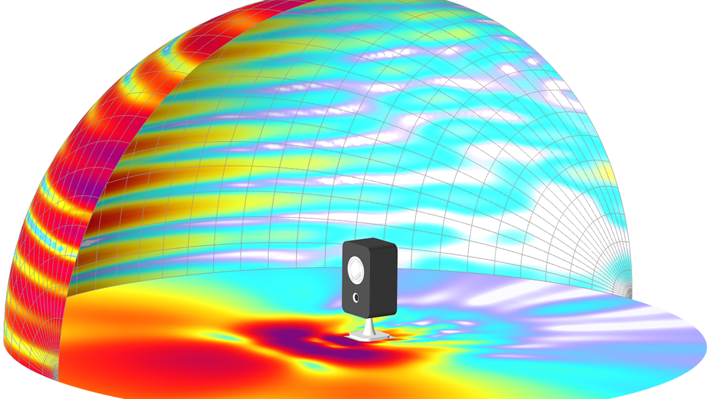
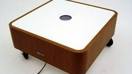

This week’s reading has led me to think on another level: AR/VR is not just a presentation tool, but also a place for storing and generating memories. Especially during the process of working on the Winchester Cathedral project, I have increasingly realized that this project is not merely about digitally modeling a cathedral, but about constructing a place of memory.

Pierre Nora’s concept of “lieux de mémoire” has been particularly inspiring to me. He said that places of memory are “established only after living memory has faded away.” This reminds me of how I felt when I first visited Winchester, it was a solemn atmosphere that was difficult to put into words. And when I plan to recreate it using VR, in fact, I am already preserving that experience in a “technical way.” However, the VR scene itself doesn’t possess much magic. What truly gives it meaning are the memory clues we incorporate into it. For example, a dilapidated altar, a chanting sound, or a tombstone that can trigger a little historical story. These details are the real “storage devices” that connect the past and the present.

COMSOL. (n.d.). [Online image]. Available at: https://www.comsol.com/acoustics-module (Accessed: 12 March 2025)
The chapter by Graham & Cook has also made me ponder an important question. Although I’m working on a virtual cathedral, it is actually highly physical. I need to use real-world tools for modeling, rendering, and controlling the lighting. Users have to wear heavy headsets and interact in a room where there are cables connecting them and they are restricted to a designated area. Technology is not transparent, in fact, at times it can even be “clumsy”. However, because of this, I must take this “materiality” into account during the design process: How can I prevent the cables from becoming an obstacle? How can I simulate space using sound and vibration? How can I evoke more authentic emotions by means of the users’ physical movements? This has made me more willing to face up to the “tangible” side of technology, so as to optimize the entire experience.

Gaver, W., Bowers, J., Boucher, A., Gellerson, H., Pennington, S., Schmidt, A., Steed, A., Villar, N. and Walker, B. (2004). The Drift Table: Designing for Ludic Engagement [Online image]. Available at: https://research.gold.ac.uk/4721/1/p885-gaver.pdf (Accessed: 12 March 2025)
Finally, Gaver’s Drift Table project, although technically completely different from my VR project, the concept of “slow and sensory interaction” it proposes has deeply resonated with me. It is not a system that stimulates the senses, but rather through very subtle interaction methods. For example, slowly pushing a fruit to the corner of the table allows people to feel the flow of the world. This makes me wonder whether my VR Cathedral experience could also have a “slow” component. For instance, after users enter a space, nothing happens at first. But as long as they stand still for a few seconds, a soft chime of the bell will ring. Or when they turn back to look at the altar, a long-forgotten conversation will be triggered. This mechanism of “waiting” and “being triggered” is actually more like a respect for “memory”, and it also adds to the fun of the interaction.
In general, this week has enabled me to redefine the goal of my project, it is not about displaying the cathedral, but rather creating a dialogue with the cathedral. And AR/VR serves as the medium for this dialogue.
Reading list
- Pierre Nora – Between Memory and History: Les Lieux de Mémoire
- Graham, B. & Cook, S. (2010). Rethinking Curating: Art after New Media, Chapter 4: The Myth of Immateriality
- Gaver, W. et al. (2004). The Drift Table